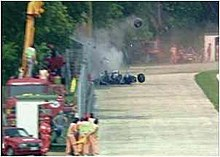

Foi um piloto brasileiro de Fórmula 1, campeão da categoria três vezes, em 1988, 1990 e 1991. E é idolo atualmente, mesmo depois da morte.
(São Paulo, 21 de março de 1960 — Bolonha, 1 de maio de 1994)
Ele começou sua carreira competindo no kart em 1973 e em "carros de fórmula" em 1981, quando venceu as Fórmulas Ford 1600 e 2000. Em 1983 alcançou o título de campeão do Campeonato Britânico de Fórmula 3 batendo vários recordes. Seu desempenho impulsionou sua ascensão à Fórmula 1, fazendo sua primeira aparição na categoria no Grande Prêmio do Brasil de 1984 pela equipe Toleman-Hart.
Em sua primeira temporada, Senna pontuou em cinco corridas, fechando o ano com treze pontos e a nona posição na classificação geral dos pilotos. No ano seguinte, ingressou na Lotus-Renault, pela qual venceu seis grandes prêmios ao longo de três temporadas. Ao todo, Senna participou de 161 grandes prêmios na Fórmula 1, alcançando 41 vitórias, 80 pódios, 65 pole positions e 19 voltas mais rápidas.
Temporadas 1984–1994
Carreira
Sua morte, assim como o funeral e velório, provocou uma das maiores comoções da história do Brasil, bem como repercussão mundial. Em pesquisas feitas com jornalistas especializados, pilotos e torcedores, foi amplamente considerado o melhor piloto da história da Fórmula 1 e um dos maiores automobilista de todos os tempos. Em 1999, foi eleito pela revista Isto É o esportista do século XX no Brasil. No auge de sua carreira, era considerado o maior ídolo brasileiro, posto que mantém mesmo depois de quase três décadas após a sua morte.
Depois de morrer, sua irmã, Viviane Senna, fundou o Instituto Ayrton Senna, uma organização não governamental que oferece oportunidades de desenvolvimento humano a crianças e jovens de baixa renda. Além disso, o personagem Senninha foi criado com a intenção de atingir o público infantil com os ideais do piloto, como a superação, dedicação e o gosto pela vitória.
